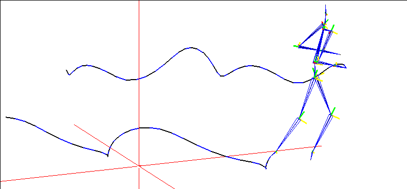
The generated wire is created from the tip of the bone that is further from the root.
The Make Wire from Joint Motion operation should come after the Update Skeleton operation.
The Quaternion Rotate Bone operation lets you rotate a bone using "quaternion" notation, which describe the orientation of an object in 3D space using four values rather than three (as with X, Y, Z rotations).
Quaternion Rotate Bone
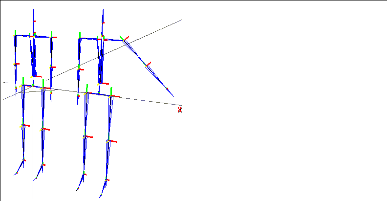
To use the Quaternion Rotate Bone operation:
1. Create a Quaternion Rotate Bone channel.
2. Insert a cue where you want the rotation to occur.
4. Rotate the target bone into the desired pose.
5. (CLICK-L) on CopyOrientation.
6. (CLICK-L) on the Animate button in the N-Dynamics script editor.
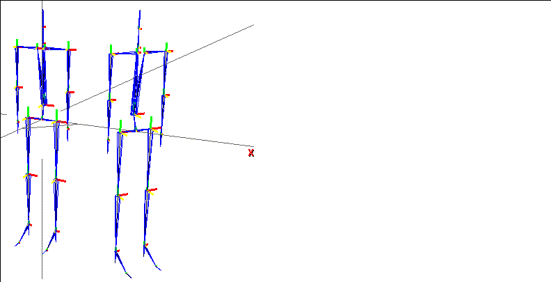
To use the Quaternion Rotate Bone operation:
1. Create a Quaternion Rotate Bone channel.
2. Insert a cue where you want the rotation to occur.
4. Rotate the target bone into the desired pose.
5. (CLICK-L) on CopyOrientation.
6. (CLICK-L) on the Animate button in the N-Dynamics script editor.
The script animates, and the bone rotates, hitting each cue in the channel.
| Parameter | Dynamic? | Description |
|---|---|---|
|
Skeleton
|
No
|
The skeleton being animated.
|
|
Orientation
|
Yes
|
The orientation of the bone at the given frame, described in quaternion notation.
|
Reads in Acclaim format motion capture data (including the .asf and .amc files). To animate using this operation you need:
Read Acclaim Data
The Read Acclaim Data operation should come before the Update Skeleton operation.
Reads in Biovision motion capture data. To animate using this operation you need:
Read Biovision Data
The Read Biovision Data operation should come before the Update Skeleton operation.
Reads a Motion Analysis motion capture data file. To animate using this operation you need:
Read Motion Analysis Data
The Read Motion Analysis Data operation should come before the Update Skeleton operation.
The Rotate Root operation lets you dynamically rotate the root of the skeleton around the X, Y, or Z axes.
Rotate Root
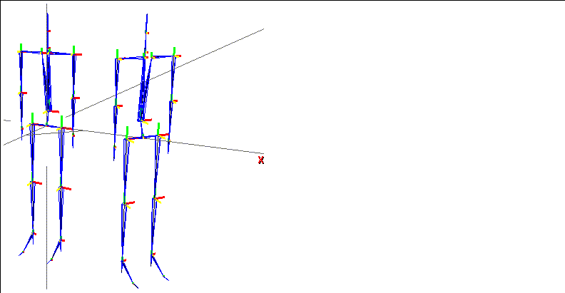
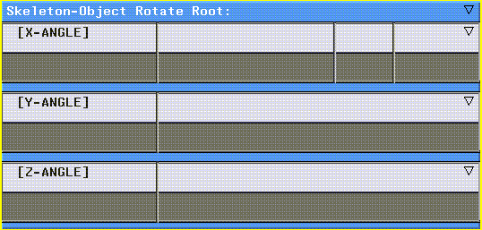
After inserting the cues where you want the rotations to occur, you can edit the cue values:
2. Adjust the value using the slider.
3. (CLICK-L) on the Animate button.
The following parameters can be set for the Rotate Root operation:
Scales the length of the selected bone using the dynamic value in Factor. You can scale the bone using one of the three modes described below. This technique can be used on several bones to create cartoonish effects, as described in the Skeletal Animation System Tutorial.
Scale Bone
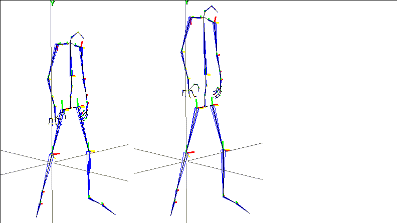
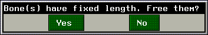
You can (CLICK-L) on Yes to free the bone.
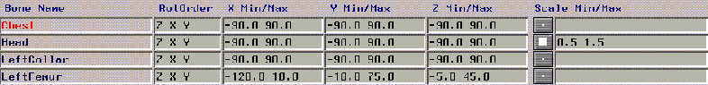
In Figure 3.24, the second bone can be scaled; all others are of fixed length.
If you want to transform (move, rotate, or scale) the entire skeleton, you can use the Transform Root operation. This operation is actually performed on the skeleton object.
Transform Root
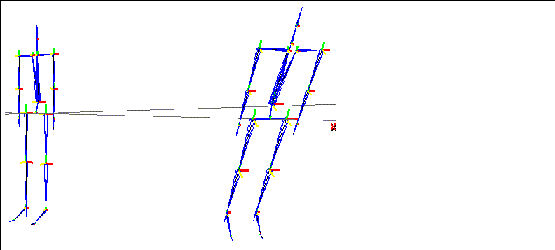
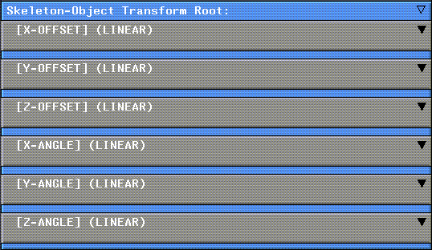
The following parameters can be set with the Transform Root operation:
If you want to translate the entire skeleton (move it along one or more axes), you can use the Translate Root operation. This operation is actually performed on the skeleton object.
Translate Root
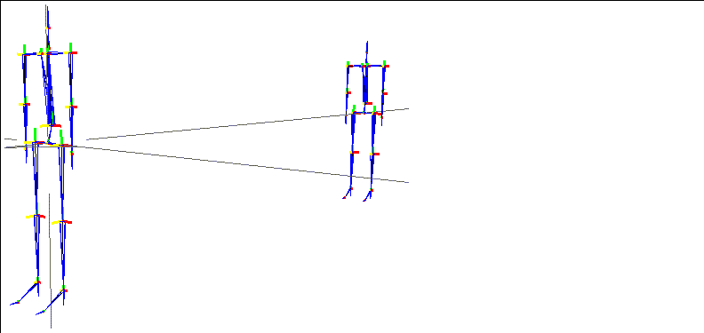
As mentioned in the section "Skeletal Operation Order in N-Dynamics Scripts," on page 3-2, the Update Skeleton operation applies the changes specified in other skeletal operations to the skeleton.
Update Skeleton
The Update Skeleton operation is visually divided into several logical sections:
If you do a simple dynamic operation such as Move or Rotate to a skeleton after the Update Skeleton operation, any skins are not updated. Update Skins updates the skins according to the new skeleton position (and should obviously go toward the bottom of the script).
Update Skins
Writes an .amc file based on the animated motion of a skeleton.
Write Acclaim Data
Rotates a bone around its local X axis.
X Rotate Bone
| Parameter | Dynamic? | Description |
|---|---|---|
|
Skeleton
|
No
|
The skeleton on which this operation is performed.
|
|
Bone
|
No
|
The bone you want to rotate.
|
|
X Angle
|
Yes
|
The dynamic value for the X rotation.
|
Rotate a bone in any or all three planes. Separate subchannels are created for each dynamic value.
XYZ Rotate Bone
Rotates a bone around its local Y axis. See X Rotate Bone, above, for details.
Y Rotate Bone
Rotates a bone around its local Z axis. See X Rotate Bone, above, for details.
Z Rotate Bone
Copyright © 1996, Nichimen Graphics Corporation. All rights reserved.